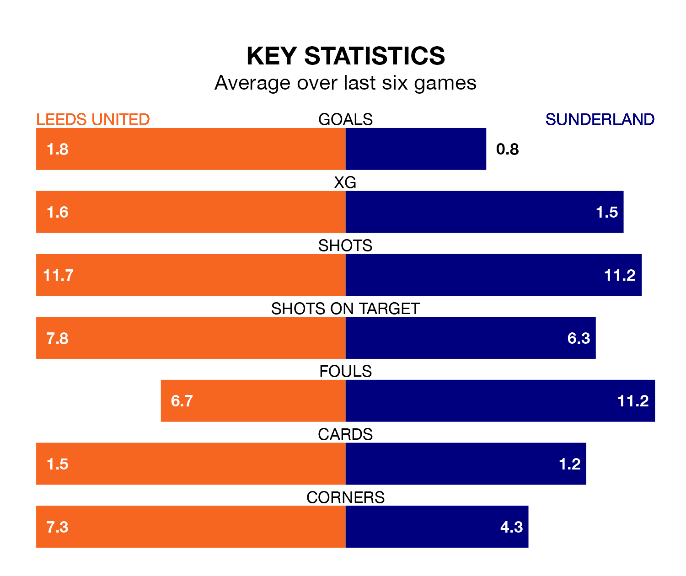

Leeds United host Sunderland in Tuesday's late match at Elland Road looking to bounce back from defeat last time out in EFL Championship.
Leeds, who sit third in the league after 41 games, fell to a 2-1 away defeat to Coventry City on Saturday.
They face a Sunderland side who secured a draw in their last match, a 0-0 tie with Bristol City, and who sit 13th in the table.
With 76 goals in 41 games so far this season, Leeds are the league's joint-third-highest scorers with 1.9 goals per game. And they are conceding fewer than average, letting in 33 goals at a rate of 0.8 per game.
Sunderland, meanwhile, are below average scorers, with 1.2 goals per game, compared to a league average of 1.3. They have also conceded 1.2 goals per game.
With Illan Meslier between the sticks, United can rely on one of the league's safest pair of hands. He has kept 17 clean sheets in his 39 appearances this season, and no 'keeper has prevented the opposition scoring more often in EFL Championship.
In the Black Cats's net, Anthony Patterson has 11 clean sheets in 41 games. He has conceded a goal every 75 minutes, 70% more often than the 124 minutes between goals for Meslier.
The home side are in good form in EFL Championship, with four wins and a draw from their last six games.
With a win and two draws over that period, the visitors' form is much worse – they have taken five points from 18, compared to Leeds's 13.
Tuesday's match will be refereed by Tim Robinson, who has taken charge of four EFL Championship games so far this season, issuing no red cards and booking 15 players. He has awarded two penalties.
The last Leeds game Robinson refereed was a 1-0 away loss to Birmingham City on August 12. He is yet to oversee a match featuring Sunderland this season.
Updated: 11:20 (UTC), 09/04/24